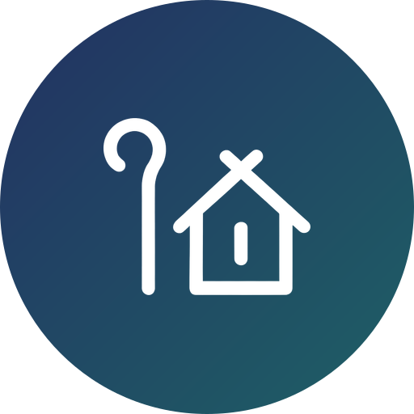

We believe the local church is the subject of mission. As a mission organization, InterCP International supports the overseas mission of local churches through mission mobilization, education, and cooperation.
Here’s how InterCP International serves alongside your local church today:
Train your members within the local church wherever it is possible
Invite regional staff to present Mission Camp or set up a booth
Send missionaries only with your church’s approval, in proper order
Receive designated gifts only, for a named purpose

Guide trainees to serve their own local church faithfully and well